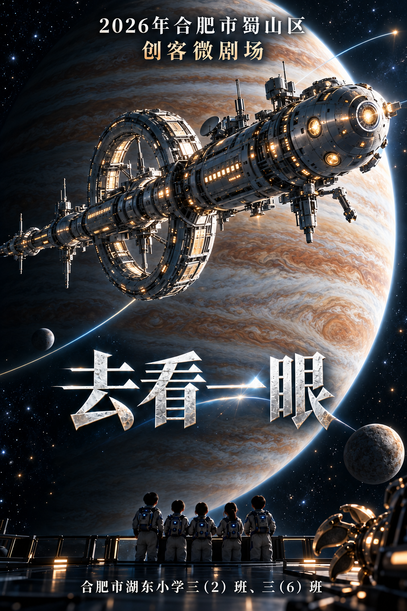
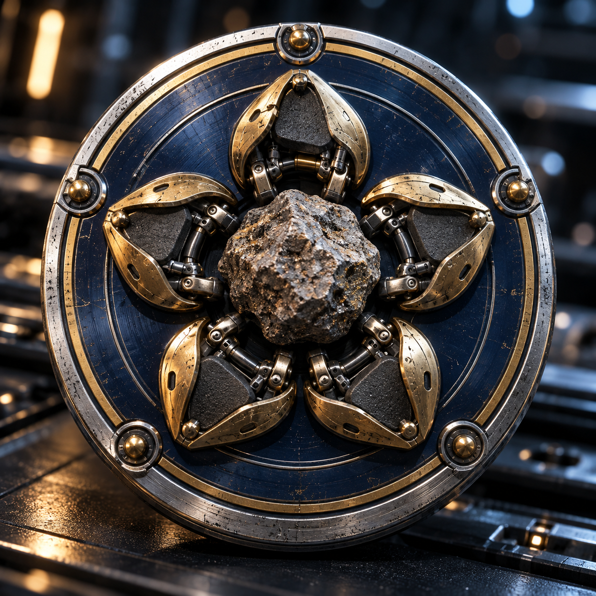
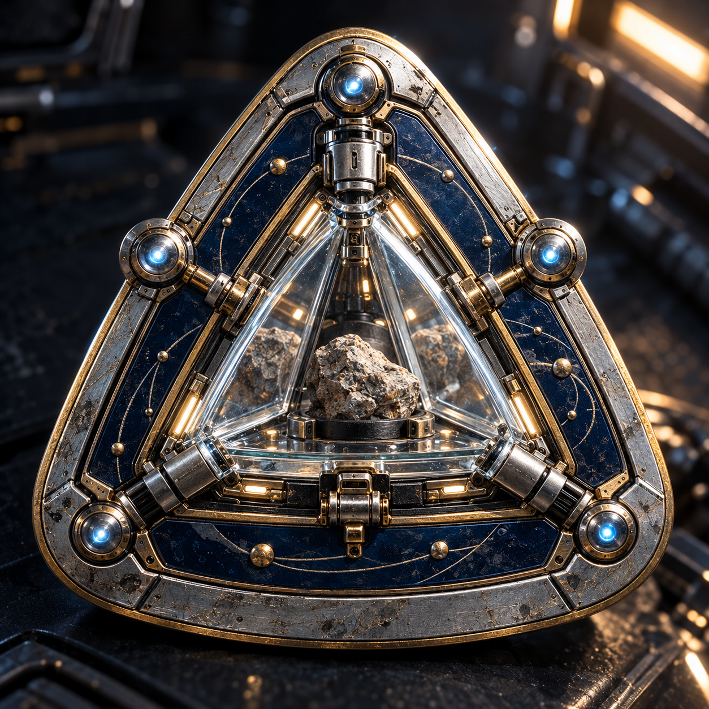
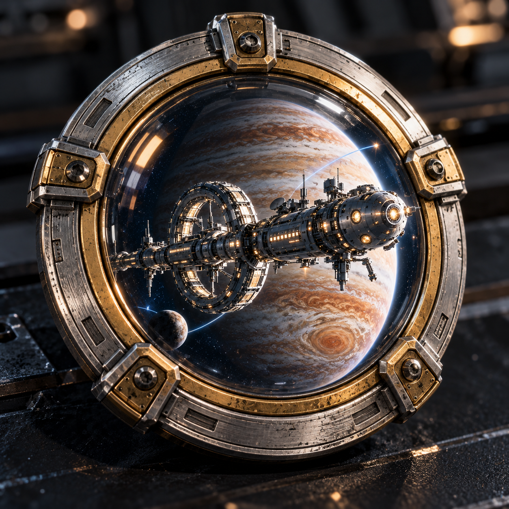

海报不出现石头眼睛 · 队徽采用同一电影的真实金属与玻璃质感
第二轮候选 · 第一轮候选；原稿全部保留。点击查看原图。

保留大飞船、木星、开放示意航迹及五人背影；岩质天体只保留自然纹理，不暗示眼睛。

真实黄铜五瓣抓手、粗糙岩石、钛银外圈和深蓝釉面。

镜面样本舱、真实玻璃折射、机械铰链与岩石倒影。

与海报同风格的科考飞船、木星与实体舷窗框。
imagegen生成，提示词与来源记录已保存。